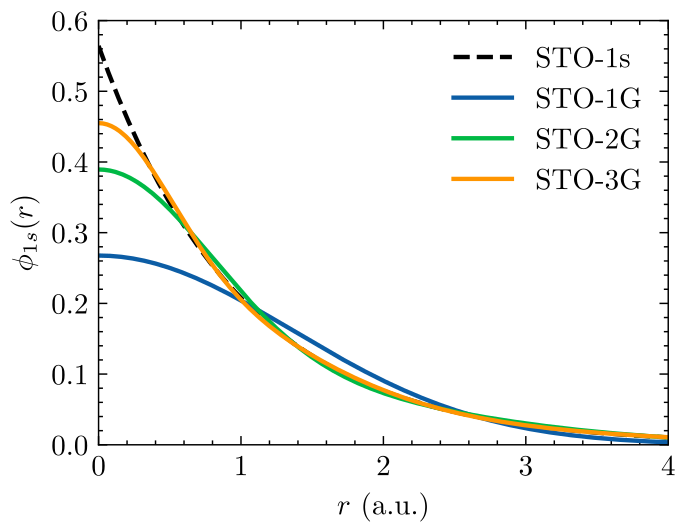

8 Conjuntos de bases
Podemos escrever os orbitais moleculares de 1 elétron, \(\varphi_k(\boldsymbol{r})\), em termos de um conjunto de base \(\phi_\mu\) tal que \[ \varphi_k(\boldsymbol{r}) = \sum_{\mu=1}^B c_{\mu k} \phi_\mu(\boldsymbol{r}) \tag{8.1}\] sendo \(B\) o número de elementos do conjunto de base. Embora os spin-orbitais sejam ortonormais, tal que \(\braket{\varphi_i|\varphi_j} = \delta_{ij}\), as funções da base podem não ser. De fato, podemos escolher elementos da base como sendo normalizados, i.e. \(\braket{\phi_\mu|\phi_\mu} = 1\), porém dois elementos distintos do conjunto de base não precisam ser ortogonais entre si, levando a um dado por \(\braket{\phi_\mu|\phi_\nu} = S_{\mu\nu}\).
Em geral, procuramos escrever as funções de base centradas nos núcleos atômicos, tal que \(\phi_\mu(\boldsymbol{r}-\boldsymbol{R}_A)\) seja a função de base \(\mu\) centrada no núcleo \(\boldsymbol{R}_A\). Como exemplo, no caso do LCAO, usamos \(\phi_\mu\) como sendo os orbitais atômicos.
8.1 Base de orbitais de Slater (STO)
Os orbitais de Slater (STO, do inglês, Slater Type Orbitals) são baseados nos orbitais do átomo de Hidrogênio mas sem levar em conta os polinômios de Laguerre. De fato, podemos escrever os orbitais de Slater como sendo \[\begin{align} \phi^{\text{STO}, nlm}(\boldsymbol{r}) = \mathcal{N} r^{n-1} e^{-\zeta r} Y_{lm}(\theta,\phi) \end{align}\] sendo \(\mathcal{N}\) uma constante de normalização, \(\zeta\) o parâmetro variacional e \(n\), \(l\) e \(m\) sendo os números quânticos. Os orbitais de Slater primitivos para os orbitais 1s, 2p e 3d são \[\begin{align} \phi^{\text{STO}, 1s}(\boldsymbol{r}) &= \left(\frac{\zeta^3}{\pi}\right)^{1/2}e^{-\zeta r} \\ \phi^{\text{STO}, 2p_x}(\boldsymbol{r}) &= \left(\frac{\zeta^5}{\pi}\right)^{1/2} x e^{-\zeta r} \\ \phi^{\text{STO}, 3d_{xy}}(\boldsymbol{r}) &= \left(\frac{2\zeta^7}{3\pi}\right)^{1/2} xy e^{-\zeta r} \end{align}\]
8.2 Base de orbitais gaussianos (GTO)
Os orbitais gaussianos (GTO, do inglês, Gaussian Type Orbitals) são baseados na função gaussiano, podendo ser escritos como \[\begin{align} \phi^{\text{GTO}}_{nlm}(\boldsymbol{r}) = \mathcal{N} r^{n-1} e^{-\alpha r^2} Y_{lm}(\theta,\phi) \end{align}\] sendo \(\mathcal{N}\) uma constante de normalização, \(\alpha\) o parâmetro variacional e \(n\), \(l\) e \(m\) sendo os números quânticos. Uma das vantagens de orbitais 1s gaussianos é a simplificação do produto de duas gaussianas com centradas em átomos distintos ter como resultado uma nova gaussiana. De fato, temos que \[\phi^{\text{GTO}}_{1s}(\alpha,\boldsymbol{r}-\boldsymbol{R}_A)\phi^{\text{GTO}}_{1s}(\beta,\boldsymbol{r}-\boldsymbol{R}_B) = K_{AB} \phi^{\text{GTO}}_{1s}(p,\boldsymbol{r}-\boldsymbol{R}_P)\] onde \[K_{AB} = \left(\frac{2 \alpha \beta}{\pi p}\right)^{3/4} e^{-\frac{\alpha \beta}{p} |\boldsymbol{R}_A-\boldsymbol{R}_B| }\] com \(p = \alpha + \beta\) e o novo centro sendo \[\begin{align} \boldsymbol{R}_P = (\alpha \boldsymbol{R}_A + \beta \boldsymbol{R}_B)/p. \end{align}\] Assim, qualquer integral de par de gaussianas pode ser efetuada como uma integral de gaussiano única.
Os orbitais gaussianos primitivos para os orbitais 1s, 2p e 3d são \[\begin{aligned} \phi_\text{1s}(\boldsymbol{r}) &= \left(\frac{2 \alpha}{\pi}\right)^{3/4}e^{-\alpha r^2} \\ \phi_{\text{2p}_x}(\boldsymbol{r}) &= \left(\frac{128\alpha^5}{\pi^3}\right)^{1/4} x e^{-\alpha r^2} \\ \phi_{\text{3d}_{xy}}(\boldsymbol{r}) &= \left(\frac{2048\alpha^7}{\pi^3}\right)^{1/4} xy e^{-\alpha r^2} \end{aligned}\]
8.3 Base de orbitais gaussianos contraídos (CGF)
Nesse caso procuramos escrever os orbitais como soma de \(n\) orbitais gaussianos tal que \[\begin{align} \phi^{\text{CGF},nlm}(\zeta,\boldsymbol{r}) = \sum_{i=1}^n d_{i\mu} \phi^{\text{GTO},nlm}_i(\zeta^2\alpha_{i\mu},\boldsymbol{r}) \end{align}\] tal que a diferença entre as duas distribuições, dada por \[\begin{align} \varepsilon = \int [\phi^{nlm}(\boldsymbol{r})-\phi^{\text{CGF},nlm}(\boldsymbol{r})]^2\ \text{d}\boldsymbol{r} \end{align}\] seja mínima.
8.4 Base de orbitais estilo Pople (STO-\(n\)G)
Esse conjunto de base consiste em CGF onde as funções \(\phi^{\text{CGF},nlm}(\boldsymbol{r})\) tentam reproduzir a base de Slater (dai o STO) com \(n\) gaussianas (dai o \(n\)G). A Figure 8.1 apresenta a comparação do orbital de slater 1s com os primeiros orbitais de Pople STO-\(n\)G.

A mais famosa delas é a base primitiva STO-3G onde são utilizadas 3 gaussianas afim de representar os orbitais 1s de Slater que pode ser representada por \[\begin{aligned} \phi^{\text{STO-3G},1s}(\zeta=1,\boldsymbol{r}) &= \sum_{i=1}^3 d_{i} \phi^{\text{GTO},1s}_i(\alpha_{i},\boldsymbol{r}) \\ \phi^{\text{STO-3G},2s}(\zeta=1,\boldsymbol{r}) &= \sum_{i=1}^3 d_{i} \phi^{\text{GTO},2s}_i(\alpha_{i},\boldsymbol{r}) \\ \phi^{\text{STO-3G},2p}(\zeta=1,\boldsymbol{r}) &= \sum_{i=1}^3 d_{i} \phi^{\text{GTO},2p}_i(\alpha_{i},\boldsymbol{r}) \end{aligned}\] e como exemplo temos que \[\begin{aligned} \phi^{\text{STO-3G},1s}(\zeta=1,\boldsymbol{r}) =\ & 0.444635\phi^{\text{GTO},1s}(\alpha=0.109818,\boldsymbol{r})\nonumber \\ & + 0.535328\phi^{\text{GTO},1s}(\alpha=0.405771,\boldsymbol{r}) \nonumber \\ &+0.154329\phi^{\text{GTO},1s}(\alpha=2.22766,\boldsymbol{r}) \end{aligned}\]
Essa base é bem estabelecida para elementos da 1ª linha da tabela periódica (Li a F), mas pode ser estendida para elementos da 2ª linha (Na a Cl) também.
8.5 Base de orbitais split valence
Nesse conjunto de bases introduzimos mais funções afim de separar a parte mais interna dos orbitais e a parte mais externa dos orbitais.
Um exemplo é dobrar o conjunto de funções tal que teremos dois parâmetros, \(\zeta\) e \(\zeta'\) para descrever cada orbital. Esse conjunto de base é denominado double zeta, e um exemplo desse conjunto é o 6-31G onde as 6 primeiras funções representam o orbital mais interno (1s), enquanto que os orbitais de valência são representados com 3 gaussianas para um parâmetro \(\zeta\) e 1 gaussiana para outro parâmetro \(\zeta'> \zeta\). Para os átomos da 1ª linha da tabela períodica (Li a F) teremos \[\begin{aligned} \phi_{1s}(\zeta,\boldsymbol{r}) &= \sum_{i=1}^6 d_{i} \phi^{\text{GTO},1s}_i(\zeta^2\alpha_{i},\boldsymbol{r}) \\ \phi_{2s}(\zeta,\boldsymbol{r}) &= \sum_{i=1}^3 d_{i} \phi^{\text{GTO},1s}_i(\zeta^2\alpha_{i},\boldsymbol{r}) \\ \phi'_{2s}(\zeta',\boldsymbol{r}) &= d_{1}' \phi^{\text{GTO},1s}_i(\zeta'^2\alpha_{i},\boldsymbol{r}) \\ \phi_{2p}(\zeta,\boldsymbol{r}) &= \sum_{i=1}^3 d_{i} \phi^{\text{GTO},2p}_i(\zeta^2\alpha_{i},\boldsymbol{r}) \\ \phi'_{2p}(\zeta',\boldsymbol{r}) &= d_{1}' \phi^{\text{GTO},2p}_i(\zeta'^2\alpha_{i},\boldsymbol{r}) \end{aligned}\] e para o H temos \[\begin{aligned} \phi_{1s}(\zeta,\boldsymbol{r}) &= \sum_{i=1}^3 d_{i} \phi^{\text{GTO},1s}_i(\zeta^2\alpha_{i},\boldsymbol{r}) \\ \phi'_{1s}(\zeta',\boldsymbol{r}) &= d_{1}' \phi^{\text{GTO},1s}_i(\zeta'^2\alpha_{i},\boldsymbol{r}) \end{aligned}\]
Existem também orbitais triple zeta como o 6-311G, orbitais quadruple zeta, orbitais 5 zeta e assim por diante.
8.6 Bases polarizadas e difusas
Até aqui usamos somente orbitais do tipo-s ou tipo-p para construir as bases.
polarizados: adição de orbitais tipo-d em átomos da 1ª linha Li-F e orbitais tipo-p para H. Como exemplo, temos 6-31G* que adiciona orbitais do tipo-d para os elementos pesados. Adicionando os orbitais do tipo-p para o H teremos o conjunto 6-31G**.
difusos: adição de orbitais tipo-s e tipo-p com \(\zeta \gg 1\) em átomos não-H tal que tenha um decaimento lento, como exemplo temos o 6-31+G. Se adicionarmos orbitais difusos tipo-s em átomos de H teremos 6-31++G.
polarizados e difusos: combinação dos dois anteriores. Exemplo, 6-31+G* com funções polarizadas e difusas apenas em átomos pesados, e 6-31+G** com funções polarizadas em átomos pesados e hidrogênio, bem como funções difusas em átomos pesados.
8.7 Famílias modernas de conjuntos de base
Além dos conjuntos de base de Pople, outras famílias foram desenvolvidas com o objetivo de melhorar a sistematicidade, a eficiência computacional e a descrição da correlação eletrônica. Entre as mais utilizadas estão os conjuntos de Ahlrichs e colaboradores, particularmente a família def2, e os conjuntos consistentes com correlação desenvolvidos por Dunning e colaboradores.
8.7.1 Conjuntos de base de Ahlrichs e família def2
Outro grupo importante de conjuntos de base gaussianos foi desenvolvido por Ahlrichs e colaboradores. As famílias originais incluem os conjuntos SV (split valence), SVP, TZV (triple-zeta valence) e TZVP, nos quais a letra P indica a inclusão de funções de polarização.
Posteriormente, esses conjuntos foram reformulados e sistematizados na família def2, que inclui conjuntos de qualidade split-valence, triple-zeta valence e quadruple-zeta valence, como
\[ \text{def2-SVP}, \qquad \text{def2-TZVP}, \qquad \text{def2-QZVP}. \]
Também existem variantes contendo conjuntos adicionais de funções de polarização, indicadas pelo sufixo PP, como
\[ \text{def2-SVPP}, \qquad \text{def2-TZVPP}, \qquad \text{def2-QZVPP}. \]
A nomenclatura pode variar entre diferentes programas de química quântica. Por exemplo, o conjunto denominado def2-SV(P) na literatura pode aparecer em alguns programas como Def2SVPP, enquanto nomes como Def2TZVP correspondem ao conjunto def2-TZVP.
A família def2 foi construída de maneira balanceada para uma ampla faixa da tabela periódica e é amplamente utilizada em cálculos de Hartree-Fock e DFT (Weigend and Ahlrichs 2005). Para elementos mais pesados, esses conjuntos são frequentemente utilizados em conjunto com potenciais efetivos de caroço (Effective Core Potentials, ECPs), reduzindo o número de elétrons tratados explicitamente.
A sequência
\[ \text{def2-SV(P)} \rightarrow \text{def2-TZVP} \rightarrow \text{def2-QZVP} \]
representa um aumento progressivo da flexibilidade do conjunto de base na região de valência. As variantes P e PP acrescentam funções de polarização, permitindo uma descrição mais flexível da distribuição eletrônica em moléculas e sólidos.
8.7.2 Bases consistentes com correlação
Os conjuntos de base consistentes com correlação (correlation-consistent basis sets) foram desenvolvidos por Dunning e colaboradores com o objetivo de descrever de maneira sistemática a energia de correlação eletrônica (Dunning 1989). Diferentemente de conjuntos construídos principalmente para reproduzir a energia de Hartree-Fock, essas bases são organizadas de modo que funções de diferentes momentos angulares sejam adicionadas em grupos que contribuem progressivamente para a recuperação da energia de correlação.
A nomenclatura geral desses conjuntos é
\[ \text{cc-pV}X\text{Z}, \]
onde cc significa correlation consistent, p indica a inclusão de funções de polarização, V indica que o conjunto foi construído para descrever a correlação dos elétrons de valência e \(X\) representa a qualidade zeta do conjunto. Os valores mais comuns são
\[ X = D,\;T,\;Q,\;5,\;6, \]
correspondendo, respectivamente, a double-zeta, triple-zeta, quadruple-zeta, quintuple-zeta e sextuple-zeta.
A característica fundamental dessa construção é que o aumento do conjunto de base não ocorre simplesmente pela adição arbitrária de funções. As funções de polarização são adicionadas em grupos ordenados de acordo com sua contribuição para a energia de correlação. Para elementos do primeiro período, por exemplo, a sequência de funções de polarização é
\[ \begin{aligned} \text{cc-pVDZ} &:\quad 1d,\\ \text{cc-pVTZ} &:\quad 2d\,1f,\\ \text{cc-pVQZ} &:\quad 3d\,2f\,1g,\\ \text{cc-pV5Z} &:\quad 4d\,3f\,2g\,1h,\\ \text{cc-pV6Z} &:\quad 5d\,4f\,3g\,2h\,1i. \end{aligned} \]
Assim, ao passar de cc-pVDZ para cc-pVTZ, por exemplo, não adicionamos apenas uma nova função radial de valência, mas também um conjunto de funções de polarização necessário para melhorar de maneira balanceada a descrição da correlação eletrônica. Essa construção produz uma sequência hierárquica de conjuntos de base que converge sistematicamente em direção ao limite de conjunto de base completo (Complete Basis Set, CBS).
Alguns exemplos da composição dos conjuntos cc-pVXZ são apresentados na tabela abaixo.
| Base | H | Li–F | Na–Cl |
|---|---|---|---|
| cc-pVDZ | [2s 1p] → 5 funções | [3s 2p 1d] → 14 funções | [4s 3p 1d] → 18 funções |
| cc-pVTZ | [3s 2p 1d] → 14 funções | [4s 3p 2d 1f] → 30 funções | [5s 4p 2d 1f] → 34 funções |
| cc-pVQZ | [4s 3p 2d 1f] → 30 funções | [5s 4p 3d 2f 1g] → 55 funções | [6s 5p 3d 2f 1g] → 59 funções |
| aug-cc-pVDZ | [3s 2p] → 9 funções | [4s 3p 2d] → 23 funções | [5s 4p 2d] → 27 funções |
| aug-cc-pVTZ | [4s 3p 2d] → 23 funções | [5s 4p 3d 2f] → 46 funções | [6s 5p 3d 2f] → 50 funções |
| aug-cc-pVQZ | [5s 4p 3d 2f] → 46 funções | [6s 5p 4d 3f 2g] → 80 funções | [7s 6p 4d 3f 2g] → 84 funções |
Os conjuntos de base aumentados, identificados pelo prefixo aug-, incluem funções difusas adicionais, isto é, funções gaussianas com expoentes pequenos e, portanto, com maior extensão espacial. Dessa forma,
\[ \text{cc-pV}X\text{Z} \longrightarrow \text{aug-cc-pV}X\text{Z}. \]
As funções difusas são particularmente importantes quando a densidade eletrônica se estende por regiões mais afastadas dos núcleos, como em ânions, estados de Rydberg, cálculos de afinidade eletrônica, polarizabilidades e interações intermoleculares de longo alcance. Os conjuntos aug-cc-pVXZ foram desenvolvidos justamente para melhorar a descrição desse tipo de sistema e propriedade (Kendall et al. 1992).
Uma das principais vantagens da família correlation-consistent é a possibilidade de estudar de maneira sistemática a convergência de uma propriedade com o tamanho do conjunto de base,
\[ \text{cc-pVDZ} \rightarrow \text{cc-pVTZ} \rightarrow \text{cc-pVQZ} \rightarrow \text{cc-pV5Z} \rightarrow \text{cc-pV6Z} \rightarrow \text{CBS}. \]
Essa característica torna esses conjuntos particularmente importantes em métodos de função de onda correlacionados, como MP2, CI e Coupled Cluster, nos quais a convergência da energia de correlação em relação ao conjunto de base desempenha um papel central.
8.8 Equações de Roothan-Hall ou Equações de Hartree-Fock em bases gaussianas
Usando a representação dos orbitais moleculares no conjunto de base, Equation 8.1, podemos escrever as equações de HF, Equation 6.5, em termos de \[\hat{F} \sum_{\nu=1}^B c_{\nu k} \ket{\phi_\nu} = \epsilon_k \sum_{\nu=1}^B c_{\nu k} \ket{\phi_\nu} \] e efetuando o produto interno com \(\ket{\phi_\mu}\), chegamos a \[ F_{\mu\nu} c_{\nu k} = \epsilon_k S_{\mu \nu} c_{\nu k} \tag{8.2}\] ou \[ \boxed{ \mathbf{F}\mathbf{C} = \mathbf{S}\mathbf{C}\boldsymbol{\epsilon} } \] onde \(S_{\mu\nu}\) são os elementos de matriz da integral de overlap, e os elementos de matriz do operador de Fock são \[ F_{\mu\nu} = \braket{\phi_\mu|\hat{F}|\phi_\nu}. \]
As Equation 8.2 são denominadas de equações de Roothan-Hall e são equivalentes as equações de HF mas agora utilizando um conjunto de base específico.
8.9 Equações de Kohn-Sham em bases gaussianas
De forma semelhante as equações de Kohn-Sham, Equation 7.2, podem ser escritas em termos do conjunto de base como \[ F_{\mu\nu} c_{\nu k} = \epsilon_k S_{\mu \nu} c_{\nu k} \] ou \[ \boxed{ \mathbf{F}\mathbf{C} = \mathbf{S}\mathbf{C}\boldsymbol{\epsilon} } \] onde \(S_{\mu\nu}\) são os elementos de matriz da integral de overlap, e os elementos de matriz do operador de Kohn-Sham são \[ F_{\mu\nu} = \braket{\phi_\mu|\hat{h}^{\text{KS}}|\phi_\nu}. \]
8.10 Matriz Densidade
Usando o conjunto de base, dado pela Equation 8.1, podemos escrever a densidade eletrônica dada por \[ \rho(\boldsymbol{r}) = 2 \sum_{i=1}^{N/2} |\varphi_i(\boldsymbol{r})|^2, \] como sendo \[\begin{align} \rho(\boldsymbol{r}) = \sum_{\mu \nu} P_{\mu\nu} \phi_\nu(\boldsymbol{r})\phi_\mu^*(\boldsymbol{r}) \end{align}\] onde definimos a matriz densidade como \[ P_{\mu\nu} = 2\sum_{i=1}^{N/2} c_{\mu i} c_{\nu i}^*, \] de tal forma que dado um conjunto de base \(\{\phi_\mu(\boldsymbol{r})\}\), a matriz densidade \(P_{\mu\nu}\) especifica completamente a densidade eletrônica \(\rho(\boldsymbol{r})\).